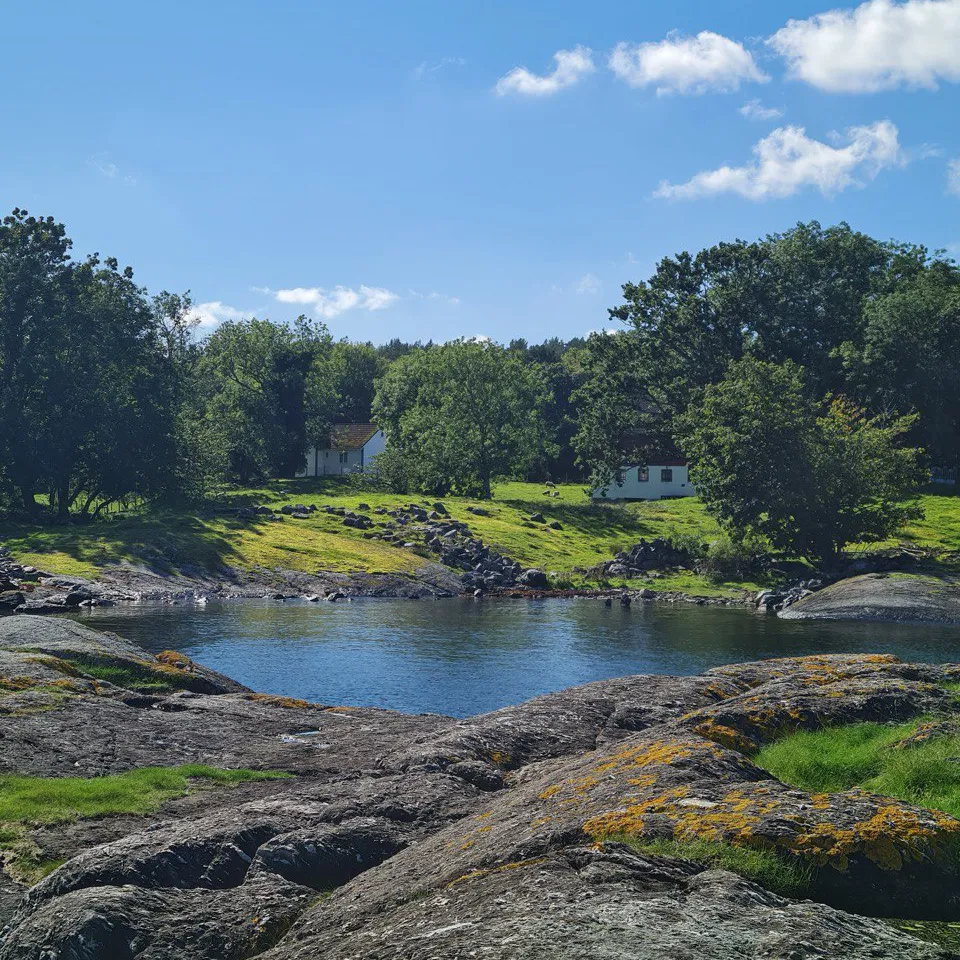
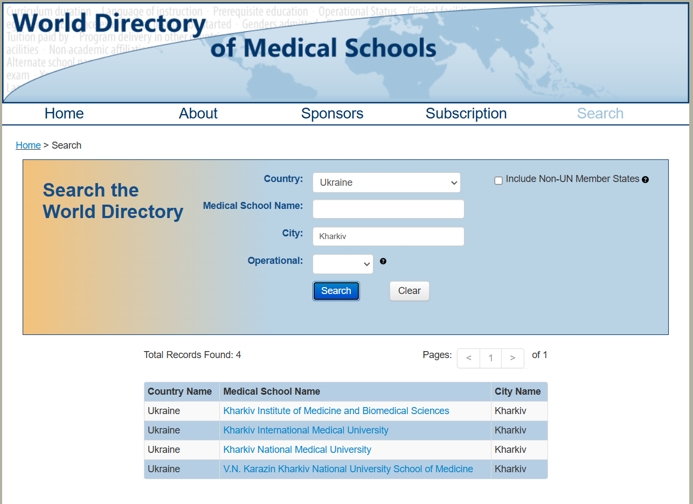

-
ENG

- UA
Перша публікація: 01 Oct 2024
Дата останньої редакції: 01 Oct 2024
 Lindøy, Norge - Sep 2023
The Norwegian Ministry of Health handles the verification of your medical education.
The first step is to make sure that the medical university you graduated from is recognized by the World Directory of Medical Schools.

If everything is OK, then the next step is to submit documents to the American company ECFMG EPIC. They send a request to your university to confirm that you really studied there. After the answer, they send a report to the Helsedirektoratet. This takes about 2 months. At the same time as EPIC evaluate your documents, you can also send them to the Helsedirektoratet. Because there the waiting time is up to 11 months.
Once your education is approved, you will receive a license that allows you to work under the supervision of another doctor. It is valid for 3 years. During this time, you must meet 3 requirements:
After that, you get the right to go through L1S. It’s like an residence in US.
Each step is described in detail in my other articles.
After obtaining a temporary license, the first job that most doctors who come to Norway from a non-EU country start with is a pleieassistent in a sykehjem (nursing home) in a municipality far from large cities (there is the greatest demand for staff and there are no high requirements). Open vacancies are monitored on the website arbeidsplassen.nav.no. It is recommended to know the language from level B1 for a more or less comfortable level of work in a sykehjem.
To work in a sykehus as an assistant, you need a well-written CV, søknadsbrev and interview practice. Your CV and søknadsbrev are evaluated by the artificial intelligence of the HR department, and you receive a Master Score according to which applications are selected. This is due to the fact that a large number of applications are received for one vacancy. In the future, experience working in a sykehus will be of great importance when applying for L1S.
For individual mentoring (help with CV, søknadsbrev and interview preparation) on finding a job in the medical field in Norway, please contact Telegram.
Useful links: